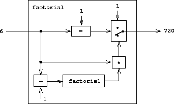
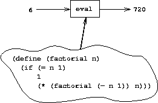

|
Our evaluator for Lisp will be implemented as a Lisp program. It mayseem circular to think about evaluating Lisp programs using anevaluator that is itself implemented in Lisp. However, evaluation isa process, so it is appropriate to describe the evaluation processusing Lisp, which, after all, is our tool for describingprocesses.3 An evaluator that is written in the same languagethat it evaluates is said to be metacircular.
The metacircular evaluator is essentially a Scheme formulation of theenvironment model of evaluation described insection 3.2. Recall that the model has twobasic parts:
1. To evaluate a combination (a compound expression other than aspecial form), evaluate the subexpressions and then apply the value ofthe operator subexpression to the values of the operandsubexpressions.
2. To apply a compound procedure to a set of arguments, evaluate thebody of the procedure in a new environment. To construct thisenvironment, extend the environment part of the procedure object by aframe in which the formal parameters of the procedure are bound to thearguments to which the procedure is applied.
These two rules describe the essence of the evaluation process, abasic cycle in which expressions to be evaluated in environments arereduced to procedures to be applied to arguments, which in turn arereduced to new expressions to be evaluated in new environments, and soon, until we get down to symbols, whose values are lookedup in the environment, and to primitive procedures, which are applieddirectly (see figure 4.1).4This evaluation cycle will be embodied by the interplay between the twocritical procedures in the evaluator, eval and apply,which are described in section 4.1.1(see figure 4.1).
The implementation of the evaluator will depend upon procedures thatdefine the syntax of the expressions to be evaluated. We willuse data abstraction to make the evaluator independent of therepresentation of the language. For example, rather than committingto a choice that an assignment is to be represented by a listbeginning with the symbol set! we use an abstract predicateassignment? to test for an assignment, and we use abstractselectors assignment-variable and assignment-value toaccess the parts of an assignment. Implementation of expressions willbe described in detail in section 4.1.2.There are also operations, described insection 4.1.3, that specify therepresentation of procedures and environments. For example, make-procedure constructs compound procedures, lookup-variable-value accesses the values of variables, and apply-primitive-procedure applies a primitive procedure to a given listof arguments.
The evaluation process can be described as the interplay between twoprocedures: eval and apply.
Eval takes as arguments an expression and an environment. Itclassifies the expression and directs its evaluation. Eval isstructured as a case analysis of the syntactic type of the expressionto be evaluated. In order to keep the procedure general, we expressthe determination of the type of an expression abstractly, making nocommitment to any particular representation for the various types ofexpressions. Each type of expression has a predicate that tests forit and an abstract means for selecting its parts. This abstractsyntax makes it easy to see how we can change the syntax of thelanguage by using the same evaluator, but with a different collection ofsyntax procedures.
eval returnsthe expression itself.
Eval must look up variables in the environment to find their values.eval returns the expression that wasquoted.
eval to compute the new value to be associated with thevariable. The environment must be modified to change (or create) thebinding of the variable.
if expression requires special processing of its parts, so as toevaluate the consequent if the predicate is true, and otherwise toevaluate the alternative.
lambda expression must be transformed into anapplicable procedure by packaging together the parameters and bodyspecified by the lambda expression with the environment of theevaluation.
begin expression requires evaluating its sequence ofexpressions in the order in which they appear.
cond) is transformed into a nest of ifexpressions and then evaluated.eval must recursivelyevaluate the operator part and the operands of the combination. Theresulting procedure and arguments are passed to apply, whichhandles the actual procedure application.Here is the definition of eval:
(define (eval exp env) (cond ((self-evaluating? exp) exp) ((variable? exp) (lookup-variable-value exp env)) ((quoted? exp) (text-of-quotation exp)) ((assignment? exp) (eval-assignment exp env)) ((definition? exp) (eval-definition exp env)) ((if? exp) (eval-if exp env)) ((lambda? exp) (make-procedure (lambda-parameters exp) (lambda-body exp) env)) ((begin? exp) (eval-sequence (begin-actions exp) env)) ((cond? exp) (eval (cond->if exp) env)) ((application? exp) (apply (eval (operator exp) env) (list-of-values (operands exp) env))) (else (error "Unknown expression type -- EVAL" exp))))
For clarity, eval has been implemented as a case analysis usingcond. The disadvantage of this is that our procedure handlesonly a few distinguishable types of expressions, and no new ones canbe defined without editing the definition of eval. In most Lispimplementations, dispatching on the type of an expression is done in adata-directed style. This allows a user to add new types ofexpressions that eval can distinguish, without modifying thedefinition of eval itself.(See exercise 4.3.)
Apply takes two arguments, a procedure and a list of argumentsto which the procedure should be applied. Apply classifiesprocedures into two kinds: It calls apply-primitive-procedure to apply primitives; it applies compoundprocedures by sequentially evaluating the expressions thatmake up the body of the procedure. The environment for theevaluation of the body of a compound procedureis constructed by extending the base environment carried bythe procedure to include a frame that binds the parameters of theprocedure to the arguments to which the procedure is to be applied.Here is the definition of apply:
(define (apply procedure arguments) (cond ((primitive-procedure? procedure) (apply-primitive-procedure procedure arguments)) ((compound-procedure? procedure) (eval-sequence (procedure-body procedure) (extend-environment (procedure-parameters procedure) arguments (procedure-environment procedure)))) (else (error "Unknown procedure type -- APPLY" procedure))))
When eval processes aprocedure application, it uses list-of-values to produce thelist of arguments to which the procedure is to be applied. List-of-values takes as an argument the operands of the combination.It evaluates each operand and returns a list of the correspondingvalues:5
(define (list-of-values exps env) (if (no-operands? exps) '() (cons (eval (first-operand exps) env) (list-of-values (rest-operands exps) env))))
Eval-if evaluates the predicate part of an if expressionin the given environment. Ifthe result is true, eval-if evaluates the consequent, otherwiseit evaluates the alternative:
(define (eval-if exp env) (if (true? (eval (if-predicate exp) env)) (eval (if-consequent exp) env) (eval (if-alternative exp) env)))
The use of true? in eval-if highlights the issue of theconnection between an implemented language and an implementationlanguage. The if-predicate is evaluated in the language beingimplemented and thus yields a value in that language. The interpreterpredicate true? translates that value into a value that can betested by the if in the implementation language: Themetacircular representation of truth might not be the same as that ofthe underlying Scheme.6
Eval-sequence is used by apply to evaluate the sequence ofexpressions in a procedure body and by eval to evaluate thesequence of expressions in a beginexpression. It takes as arguments a sequence of expressions and anenvironment, and evaluates the expressions in the order in which theyoccur. The value returned is the value of the final expression.
(define (eval-sequence exps env) (cond ((last-exp? exps) (eval (first-exp exps) env)) (else (eval (first-exp exps) env) (eval-sequence (rest-exps exps) env))))
The following procedure handles assignments to variables. It callseval to find the value to be assigned and transmits the variableand the resulting value to set-variable-value! to be installedin the designated environment.
(define (eval-assignment exp env) (set-variable-value! (assignment-variable exp) (eval (assignment-value exp) env) env) 'ok)
Definitions of variables are handled in a similarmanner.7
(define (eval-definition exp env) (define-variable! (definition-variable exp) (eval (definition-value exp) env) env) 'ok)
We have chosen here to return the symbol ok as the valueof an assignment or a definition.8
Exercise 4.1. Notice that we cannot tell whether the metacircular evaluatorevaluates operands from left to right or from right to left. Its evaluationorder is inherited from the underlying Lisp:If the arguments to cons in list-of-valuesare evaluated from left to right, then list-of-values willevaluate operands from left to right; andif the arguments to consare evaluated from right to left, then list-of-values willevaluate operands from right to left.
Write a version of list-of-values that evaluates operandsfrom left to right regardless of the order of evaluation in the underlyingLisp. Also write a version of list-of-values that evaluates operandsfrom right to left.
The evaluator is reminiscent of the symbolic differentiation programdiscussed in section 2.3.2. Bothprograms operate on symbolic expressions. In both programs, theresult of operating on a compound expression is determined byoperating recursively on the pieces of the expression and combiningthe results in a way that depends on the type of the expression. Inboth programs we used data abstraction to decouple the general rulesof operation from the details of how expressions are represented. Inthe differentiation program this meant that the same differentiationprocedure could deal with algebraic expressions in prefix form, ininfix form, or in some other form. For the evaluator, this means thatthe syntax of the language being evaluated is determined solely by theprocedures that classify and extract pieces of expressions.
Here is the specification of the syntax of our language:
¤ The only self-evaluating items are numbers andstrings:
(define (self-evaluating? exp) (cond ((number? exp) true) ((string? exp) true) (else false)))
¤ Variables are represented by symbols:
(define (variable? exp) (symbol? exp))
¤ Quotations have the form (quote<text-of-quotation>):9
(define (quoted? exp) (tagged-list? exp 'quote)) (define (text-of-quotation exp) (cadr exp))
Quoted? is defined in terms of the procedure tagged-list?, which identifies lists beginning with a designatedsymbol:
(define (tagged-list? exp tag) (if (pair? exp) (eq? (car exp) tag) false))
¤ Assignments have the form (set!<var> <value>):
(define (assignment? exp) (tagged-list? exp 'set!)) (define (assignment-variable exp) (cadr exp)) (define (assignment-value exp) (caddr exp))
¤ Definitions have the form
(define <var> <value>)
or the form
(define (<var> <parameter1> ... <parametern>)
<body>)
The latter form (standard procedure definition) is syntactic sugar for
(define <var>
(lambda (<parameter1> ... <parametern>)
<body>))
The corresponding syntax procedures are the following:
(define (definition? exp) (tagged-list? exp 'define)) (define (definition-variable exp) (if (symbol? (cadr exp)) (cadr exp) (caadr exp))) (define (definition-value exp) (if (symbol? (cadr exp)) (caddr exp) (make-lambda (cdadr exp) ; formal parameters (cddr exp)))) ; body
¤ Lambda expressions are lists that begin with thesymbol lambda:
(define (lambda? exp) (tagged-list? exp 'lambda)) (define (lambda-parameters exp) (cadr exp)) (define (lambda-body exp) (cddr exp))
We also provide a constructor for lambda expressions,which is used by definition-value, above:
(define (make-lambda parameters body) (cons 'lambda (cons parameters body)))
¤ Conditionals begin with if and have a predicate, aconsequent, and an (optional) alternative. If the expression has noalternative part, we provide false as the alternative.10
(define (if? exp) (tagged-list? exp 'if)) (define (if-predicate exp) (cadr exp)) (define (if-consequent exp) (caddr exp)) (define (if-alternative exp) (if (not (null? (cdddr exp))) (cadddr exp) 'false))
We also provide a constructor for if expressions,to be used by cond->if to transform cond expressionsinto if expressions:
(define (make-if predicate consequent alternative) (list 'if predicate consequent alternative))
¤ Begin packages a sequence of expressions into a singleexpression. We include syntax operations on begin expressionsto extract the actual sequence from the begin expression, aswell as selectors that return the first expression and the rest of theexpressions in the sequence.11
(define (begin? exp) (tagged-list? exp 'begin)) (define (begin-actions exp) (cdr exp)) (define (last-exp? seq) (null? (cdr seq))) (define (first-exp seq) (car seq)) (define (rest-exps seq) (cdr seq))
We also include a constructor sequence->exp (for use bycond->if) that transforms a sequence into a single expression,using begin if necessary:
(define (sequence->exp seq) (cond ((null? seq) seq) ((last-exp? seq) (first-exp seq)) (else (make-begin seq)))) (define (make-begin seq) (cons 'begin seq))
¤ A procedure application is any compound expressionthat is not one of the above expression types. The car of theexpression is the operator, and the cdr is the list of operands:
(define (application? exp) (pair? exp)) (define (operator exp) (car exp)) (define (operands exp) (cdr exp)) (define (no-operands? ops) (null? ops)) (define (first-operand ops) (car ops)) (define (rest-operands ops) (cdr ops))
Some special forms in our language can be defined in terms ofexpressions involving other special forms, rather than beingimplemented directly. One example is cond, which can beimplemented as a nest of if expressions. For example,we can reduce the problem of evaluating the expression
(cond ((> x 0) x) ((= x 0) (display 'zero) 0) (else (- x)))
to the problem of evaluating the followingexpression involving if and begin expressions:
(if (> x 0) x (if (= x 0) (begin (display 'zero) 0) (- x)))
Implementing the evaluation of cond in this waysimplifies the evaluator because it reduces the number of specialforms for which the evaluation process must be explicitly specified.
We include syntax procedures that extract the parts of a condexpression, and a procedure cond->if that transforms condexpressions into if expressions. A case analysis begins with cond and has a list of predicate-action clauses. A clause is an else clause if its predicate is the symbol else.12
(define (cond? exp) (tagged-list? exp 'cond))
(define (cond-clauses exp) (cdr exp))
(define (cond-else-clause? clause)
(eq? (cond-predicate clause) 'else))
(define (cond-predicate clause) (car clause))
(define (cond-actions clause) (cdr clause))
(define (cond->if exp)
(expand-clauses (cond-clauses exp)))
(define (expand-clauses clauses)
(if (null? clauses)
'false ; no else clause
(let ((first (car clauses))
(rest (cdr clauses)))
(if (cond-else-clause? first)
(if (null? rest)
(sequence->exp (cond-actions first))
(error "ELSE clause isn't last -- COND->IF"
clauses))
(make-if (cond-predicate first)
(sequence->exp (cond-actions first))
(expand-clauses rest))))))
Expressions (such as cond) that we choose to implement as syntactictransformations are called derived expressions.Let expressions are also derived expressions(see exercise 4.6).13
Exercise 4.2. Louis Reasoner plans to reorder the cond clausesin eval so that the clause for procedure applications appearsbefore the clause for assignments. He argues that this will make theinterpreter more efficient: Since programs usually contain moreapplications than assignments, definitions, and so on,his modified eval will usually check fewerclauses than the original eval before identifying the type of anexpression.
a. What is wrong with Louis's plan? (Hint: What willLouis's evaluator do with the expression (define x 3)?)
b. Louis is upset that his plan didn't work.He is willing to go to any lengths to make his evaluatorrecognize procedure applications before it checks for most otherkinds of expressions.Help him by changing the syntax of the evaluated language so thatprocedure applications start with call. For example, instead of(factorial 3) we will now have to write (call factorial 3)and instead of (+ 1 2) we will have to write (call + 1 2).
Exercise 4.3. Rewrite eval so that the dispatch is done in data-directedstyle. Compare this with the data-directeddifferentiation procedure ofexercise 2.73.(You may use the car of a compound expression as thetype of the expression, as is appropriate for the syntax implementedin this section.).
Exercise 4.4. Recall the definitions of the special forms and and orfrom chapter 1:
and: The expressions are evaluated fromleft to right. If any expression evaluates tofalse, false is returned; any remaining expressions are notevaluated. If all the expressions evaluate to true values, the valueof the last expression is returned. If there are no expressions thentrue is returned.
or: The expressions are evaluated from left to right. If anyexpression evaluates to a true value, that value isreturned; any remaining expressions are not evaluated. If allexpressions evaluate to false, or if there are no expressions,then false is returned.Install and and or as new special forms for the evaluatorby defining appropriate syntax procedures and evaluationprocedures eval-and and eval-or. Alternatively, show howto implement and and or as derived expressions.
Exercise 4.5. Scheme allows an additional syntax for cond clauses, (<test> => <recipient>). If <test>evaluates to a true value, then <recipient> is evaluated. Itsvalue must be a procedure of one argument; this procedure is theninvoked on the value of the <test>, and the result is returned asthe value of the cond expression. For example
(cond ((assoc 'b '((a 1) (b 2))) => cadr) (else false))
returns 2.Modify the handling of cond so that it supports this extendedsyntax.
Exercise 4.6. Let expressions are derived expressions, because
(let ((<var1> <exp1>) ... (<varn> <expn>))
<body>)
is equivalent to
((lambda (<var1> ... <varn>)
<body>)
<exp1>
⋮
<expn>)
Implement a syntactic transformation let->combination thatreduces evaluating let expressions to evaluating combinations ofthe type shown above, and add the appropriate clause to eval tohandle let expressions.
Exercise 4.7. Let* is similar to let, except that the bindings of the let variables are performed sequentially from left to right, and eachbinding is made in an environment in which all of the precedingbindings are visible. For example
(let* ((x 3) (y (+ x 2)) (z (+ x y 5))) (* x z))
returns 39. Explain how a let* expression can be rewritten as aset of nested let expressions, and write a procedure let*->nested-lets that performs this transformation. If wehave already implemented let (exercise 4.6)and we want toextend the evaluator to handle let*, is it sufficient to adda clause to eval whose action is
(eval (let*->nested-lets exp) env)
or must weexplicitly expand let* in terms of non-derived expressions?
Exercise 4.8. “Named let” is a variant of let that has the form
(let <var> <bindings> <body>)
The <bindings> and <body> are just as in ordinary let, except that <var> is bound within <body> to aprocedure whose body is <body> and whose parameters are thevariables in the <bindings>. Thus, one can repeatedly execute the<body> by invoking the procedure named <var>. For example,the iterative Fibonacci procedure (section 1.2.2)can be rewritten using named let as follows:
(define (fib n) (let fib-iter ((a 1) (b 0) (count n)) (if (= count 0) b (fib-iter (+ a b) a (- count 1)))))
Modify let->combination of exercise 4.6 toalso support named let.
Exercise 4.9. Many languages support a variety of iteration constructs, such as do, for, while, and until. In Scheme,iterative processes can be expressed in terms of ordinary procedurecalls, so special iteration constructs provide no essential gain incomputational power. On the other hand, such constructs are oftenconvenient. Design some iteration constructs, give examples of theiruse, and show how to implement them as derived expressions.
Exercise 4.10. By using data abstraction, we were able to write an evalprocedure that is independent of the particular syntax of the languageto be evaluated. To illustrate this, design and implement a newsyntax for Scheme by modifying the procedures in this section, withoutchanging eval or apply.
In addition to defining the external syntax of expressions, theevaluator implementation must also define the data structures that theevaluator manipulates internally, as part of the execution of aprogram, such as the representation of procedures and environments andthe representation of true and false.
For conditionals, we accept anything to be true that is notthe explicit false object.
(define (true? x) (not (eq? x false))) (define (false? x) (eq? x false))
To handle primitives, we assume that we have available thefollowing procedures:
(apply-primitive-procedure <proc> <args>)
applies the given primitive procedure to the argument values in thelist <args> and returns the result of the application.
(primitive-procedure? <proc>)
tests whether <proc> is a primitive procedure.These mechanisms for handling primitives are further described insection 4.1.4.
Compound procedures are constructed from parameters, procedurebodies, and environments using the constructor make-procedure:
(define (make-procedure parameters body env) (list 'procedure parameters body env)) (define (compound-procedure? p) (tagged-list? p 'procedure)) (define (procedure-parameters p) (cadr p)) (define (procedure-body p) (caddr p)) (define (procedure-environment p) (cadddr p))
The evaluator needs operations for manipulating environments. Asexplained in section 3.2, an environment is asequence of frames, where each frame is a table of bindings thatassociate variables with their corresponding values. We usethe following operations for manipulating environments:
(lookup-variable-value <var> <env>)
returns the value that is bound to the symbol <var> in theenvironment <env>, or signals an error if the variable is unbound.
(extend-environment <variables> <values> <base-env>)
returns a new environment, consisting of a new frame in which thesymbols in the list <variables> are bound to the correspondingelements in the list <values>, where the enclosing environment isthe environment <base-env>.
(define-variable! <var> <value> <env>)
adds to the first frame in the environment <env> a new binding thatassociates the variable <var> with the value <value>.
(set-variable-value! <var> <value> <env>)
changes the binding of the variable <var> in the environment <env>so that the variable is now bound to the value <value>, or signalsan error if the variable is unbound.To implement these operations we represent an environment as a list offrames. The enclosing environment of an environment is the cdr ofthe list. The empty environment is simply the empty list.
(define (enclosing-environment env) (cdr env)) (define (first-frame env) (car env)) (define the-empty-environment '())
Each frame of an environment is represented as a pair of lists: a listof the variables bound in that frame and a list of the associated values.14
(define (make-frame variables values) (cons variables values)) (define (frame-variables frame) (car frame)) (define (frame-values frame) (cdr frame)) (define (add-binding-to-frame! var val frame) (set-car! frame (cons var (car frame))) (set-cdr! frame (cons val (cdr frame))))
To extend an environment by a new frame that associates variables withvalues, we make a frame consisting of the list of variables and thelist of values, and we adjoin this to the environment. We signalan error if the number of variables does not match the number of values.
(define (extend-environment vars vals base-env) (if (= (length vars) (length vals)) (cons (make-frame vars vals) base-env) (if (< (length vars) (length vals)) (error "Too many arguments supplied" vars vals) (error "Too few arguments supplied" vars vals))))
To look up a variable in an environment, we scan the list of variablesin the first frame. If we find the desired variable, we returnthe corresponding element in the list of values. If we do not findthe variable in the current frame, we search the enclosing environment,and so on. If we reach the empty environment, we signal an “unboundvariable” error.
(define (lookup-variable-value var env) (define (env-loop env) (define (scan vars vals) (cond ((null? vars) (env-loop (enclosing-environment env))) ((eq? var (car vars)) (car vals)) (else (scan (cdr vars) (cdr vals))))) (if (eq? env the-empty-environment) (error "Unbound variable" var) (let ((frame (first-frame env))) (scan (frame-variables frame) (frame-values frame))))) (env-loop env))
To set a variable to a new value in a specified environment, we scanfor the variable, just as in lookup-variable-value, and changethe corresponding value when we find it.
(define (set-variable-value! var val env) (define (env-loop env) (define (scan vars vals) (cond ((null? vars) (env-loop (enclosing-environment env))) ((eq? var (car vars)) (set-car! vals val)) (else (scan (cdr vars) (cdr vals))))) (if (eq? env the-empty-environment) (error "Unbound variable -- SET!" var) (let ((frame (first-frame env))) (scan (frame-variables frame) (frame-values frame))))) (env-loop env))
To define a variable, we search the first frame for a binding forthe variable, and change the binding if it exists(just as in set-variable-value!). If no such bindingexists, we adjoin one to the first frame.
(define (define-variable! var val env) (let ((frame (first-frame env))) (define (scan vars vals) (cond ((null? vars) (add-binding-to-frame! var val frame)) ((eq? var (car vars)) (set-car! vals val)) (else (scan (cdr vars) (cdr vals))))) (scan (frame-variables frame) (frame-values frame))))
The method described here is only one of many plausible ways torepresent environments. Since we used data abstraction to isolate therest of the evaluator from the detailed choice of representation, wecould change the environment representation if we wanted to. (Seeexercise 4.11.) In aproduction-quality Lisp system, the speed of the evaluator'senvironment operations – especially that of variable lookup – has amajor impact on the performance of the system. The representationdescribed here, although conceptually simple, is not efficient andwould not ordinarily be used in a production system.15
Exercise 4.11. Instead of representing a frame as a pair of lists, we can represent aframe as a list of bindings, where each binding is a name-value pair.Rewrite the environment operations to use this alternativerepresentation.
Exercise 4.12. The procedures set-variable-value!, define-variable!,and lookup-variable-value can be expressed in terms ofmore abstract procedures for traversing the environment structure.Define abstractions that capture the common patterns and redefinethe three procedures in terms of these abstractions.
Exercise 4.13. Scheme allows us to create new bindings for variables by means of define, but provides no way to get rid of bindings. Implement forthe evaluator a special form make-unbound! that removes thebinding of a given symbol from the environment in which themake-unbound! expression is evaluated.This problem is not completely specified. For example,should we remove only the binding in the first frame of theenvironment? Complete the specification and justify any choices youmake.
Given the evaluator, we have in our hands a description(expressed in Lisp) of the processby which Lisp expressions are evaluated. One advantage of expressing theevaluator as a program is that we can run the program. This gives us,running within Lisp, a working model of how Lisp itself evaluatesexpressions. This can serve as a framework for experimenting withevaluation rules, as we shall do later in this chapter.
Our evaluator program reduces expressions ultimately to theapplication of primitive procedures. Therefore, all that we need torun the evaluator is to create a mechanism that calls on the underlyingLisp system to model the application of primitive procedures.
There must be a binding for each primitive procedure name, so that wheneval evaluates the operator of an application of a primitive, itwill find an object to pass to apply. We thus set up a globalenvironment that associates unique objects with the names of theprimitive procedures that can appearin the expressions we will be evaluating. Theglobal environment also includes bindings for the symbols true andfalse, so that they can be used as variables in expressionsto be evaluated.
(define (setup-environment) (let ((initial-env (extend-environment (primitive-procedure-names) (primitive-procedure-objects) the-empty-environment))) (define-variable! 'true true initial-env) (define-variable! 'false false initial-env) initial-env)) (define the-global-environment (setup-environment))
It does not matter how we represent the primitive procedure objects,so long as apply can identify and apply them by using theprocedures primitive-procedure? and apply-primitive-procedure. We have chosen to represent a primitiveprocedure as a list beginning with the symbol primitive andcontaining a procedure in the underlying Lisp that implements that primitive.
(define (primitive-procedure? proc) (tagged-list? proc 'primitive)) (define (primitive-implementation proc) (cadr proc))
Setup-environment will get the primitive names and implementationprocedures from a list:16
(define primitive-procedures (list (list 'car car) (list 'cdr cdr) (list 'cons cons) (list 'null? null?) <more primitives> )) (define (primitive-procedure-names) (map car primitive-procedures)) (define (primitive-procedure-objects) (map (lambda (proc) (list 'primitive (cadr proc))) primitive-procedures))
To apply a primitive procedure, we simply apply the implementationprocedure to the arguments, using the underlying Lisp system:17
(define (apply-primitive-procedure proc args) (apply-in-underlying-scheme (primitive-implementation proc) args))
For convenience in running the metacircular evaluator, we provide a driver loop that models the read-eval-print loop of the underlyingLisp system. It prints a prompt, reads an input expression,evaluates this expression in the global environment, and prints theresult. We precede each printed result by an output prompt soas to distinguish the value of the expression from otheroutput that may be printed.18
(define input-prompt ";;; M-Eval input:") (define output-prompt ";;; M-Eval value:") (define (driver-loop) (prompt-for-input input-prompt) (let ((input (read))) (let ((output (eval input the-global-environment))) (announce-output output-prompt) (user-print output))) (driver-loop)) (define (prompt-for-input string) (newline) (newline) (display string) (newline)) (define (announce-output string) (newline) (display string) (newline))
We use a special printing procedure, user-print, to avoid printing theenvironment part of a compound procedure, which may be a very long list(or may even contain cycles).
(define (user-print object) (if (compound-procedure? object) (display (list 'compound-procedure (procedure-parameters object) (procedure-body object) '<procedure-env>)) (display object)))
Now all we need to do to run the evaluator is to initialize theglobal environment and start the driver loop. Here is a sampleinteraction:
(define the-global-environment (setup-environment)) (driver-loop) ;;; M-Eval input: (define (append x y) (if (null? x) y (cons (car x) (append (cdr x) y)))) ;;; M-Eval value: ok ;;; M-Eval input: (append '(a b c) '(d e f)) ;;; M-Eval value: (a b c d e f)
Exercise 4.14. Eva Lu Ator and Louis Reasoner are each experimenting with themetacircular evaluator. Eva types in the definition of map, andruns some test programs that use it. They work fine. Louis, in contrast,has installed the system version of map as a primitive for themetacircular evaluator. When he tries it, things go terriblywrong. Explain why Louis's map fails even though Eva's works.
In thinking about a Lisp program that evaluates Lisp expressions, ananalogy might be helpful. One operational view of the meaning of aprogram is that a program is a description of an abstract (perhapsinfinitely large) machine. For example, consider the familiarprogram to compute factorials:
(define (factorial n) (if (= n 1) 1 (* (factorial (- n 1)) n)))
We may regard this program as the description of a machine containingparts that decrement, multiply, and test for equality, together with atwo-position switch and another factorial machine. (The factorialmachine is infinite because it contains another factorial machinewithin it.) Figure 4.2 is a flow diagram for thefactorial machine, showing how the parts are wired together.
|  |
In a similar way, we can regard the evaluator as a very specialmachine that takes as input a description of a machine. Given thisinput, the evaluator configures itself to emulate the machinedescribed. For example, if we feed our evaluator the definition offactorial, as shown in figure 4.3, theevaluator will be able to compute factorials.
|  |
From this perspective, our evaluator is seen to be a universal machine.It mimics other machines when these are described as Lisp programs.19This is striking. Try to imagine an analogous evaluator for electricalcircuits. This would be a circuit that takes as input a signalencoding the plans for some other circuit, such as a filter. Giventhis input, the circuit evaluator would then behave like a filter withthe same description. Such a universal electrical circuit isalmost unimaginably complex. It is remarkable that the programevaluator is a rather simple program.20
Another striking aspect of the evaluator is that it acts as a bridgebetween the data objects that are manipulated by our programminglanguage and the programming language itself. Imagine that theevaluator program (implemented in Lisp) is running, and that a user istyping expressions to the evaluator and observing the results. Fromthe perspective of the user, an input expression such as (* x x)is an expression in the programming language, which the evaluatorshould execute. From the perspective of the evaluator, however, theexpression is simply a list (in this case, a list of three symbols:*, x, and x) that is to be manipulated according toa well-defined set of rules.
That the user's programs are the evaluator's data need not be a sourceof confusion. In fact, it is sometimes convenient to ignore thisdistinction, and to give the user the ability to explicitly evaluate adata object as a Lisp expression, by making eval available foruse in programs. Many Lisp dialects provide a primitive evalprocedure that takes as arguments an expression and an environment andevaluates the expression relative to the environment.21Thus,
(eval '(* 5 5) user-initial-environment)
and
(eval (cons '* (list 5 5)) user-initial-environment)
will both return 25.22
Exercise 4.15. Given a one-argument procedure p and an object a, pis said to “halt” on a if evaluating the expression (pa) returns a value (as opposed to terminating with an error messageor running forever). Show that it is impossible to write a procedurehalts? that correctly determines whether p halts on a for any procedure p and object a. Use the followingreasoning: If you had such a procedure halts?, you couldimplement the following program:
(define (run-forever) (run-forever)) (define (try p) (if (halts? p p) (run-forever) 'halted))
Now consider evaluating the expression (try try) and show thatany possible outcome (either halting or running forever) violates theintended behavior of halts?.23
Our environment model of evaluation and our metacircular evaluator executedefinitions in sequence, extending the environment frame onedefinition at a time. This is particularly convenient for interactiveprogram development, in which the programmer needs to freely mix theapplication of procedures with the definition of new procedures.However, if we think carefully about the internal definitionsused to implement block structure (introduced insection 1.1.8), we will find that name-by-name extensionof the environment may not be the best way to define local variables.
Consider a procedure with internal definitions, such as
(define (f x)
(define (even? n)
(if (= n 0)
true
(odd? (- n 1))))
(define (odd? n)
(if (= n 0)
false
(even? (- n 1))))
<rest of body of f>)
Our intention here is that the name odd? in the body of theprocedure even? should refer to the procedure odd? that isdefined after even?. The scope of the name odd? is theentire body of f, not just the portion of the body of fstarting at the point where the define for odd? occurs.Indeed, when we consider that odd? is itself defined in terms ofeven? – so that even? and odd? are mutuallyrecursive procedures – we see that the only satisfactoryinterpretation of the two defines is to regard them as if thenames even? and odd? were being added to the environmentsimultaneously.More generally, in block structure, the scope of a local name is theentire procedure body in which the define is evaluated.
As it happens, our interpreter will evaluate calls to fcorrectly, but for an “accidental” reason: Since the definitions ofthe internal procedures come first, no calls to these procedures willbe evaluated until all of them have been defined. Hence, odd?will have been defined by the time even? is executed. In fact,our sequential evaluation mechanism will give the same result as amechanism that directly implements simultaneous definition for anyprocedure in which the internal definitions come first in a body andevaluation of the value expressions for the defined variables doesn'tactually use any of the defined variables.(For an example of a procedure that doesn't obey these restrictions,so that sequential definition isn't equivalent to simultaneous definition,see exercise 4.19.)24
There is, however, a simple way to treat definitions so thatinternally defined names have truly simultaneous scope – just createall local variables that will be in the current environment beforeevaluating any of the value expressions. One way to do this is by asyntax transformation on lambda expressions. Before evaluatingthe body of a lambda expression, we “scan out” and eliminateall the internal definitions in the body. The internally definedvariables will be created with a let and then set to theirvalues by assignment. For example, the procedure
(lambda <vars> (define u <e1>) (define v <e2>) <e3>)
would be transformed into
(lambda <vars> (let ((u '*unassigned*) (v '*unassigned*)) (set! u <e1>) (set! v <e2>) <e3>))
where *unassigned* is a special symbol that causes looking up avariable to signal an error if an attempt is made to use the value ofthe not-yet-assigned variable.
An alternative strategy for scanning out internal definitions is shownin exercise 4.18. Unlike the transformationshown above, this enforces the restriction that the defined variables'values can be evaluated without using any of the variables' values.25
Exercise 4.16. In this exercise we implement the method just described forinterpreting internal definitions.We assume that the evaluator supports let(see exercise 4.6).
a. Change lookup-variable-value(section 4.1.3) to signal an error ifthe value it finds is the symbol *unassigned*.
b. Write a procedure scan-out-defines that takes aprocedure body and returns an equivalent one that has no internaldefinitions, by making the transformation described above.
c. Install scan-out-defines in the interpreter, either in make-procedure or in procedure-body (seesection 4.1.3). Which place is better?Why?
Exercise 4.17. Draw diagrams of the environment in effect when evaluating theexpression <e3> in the procedure in the text, comparing how thiswill be structured when definitions are interpreted sequentially withhow it will be structured if definitions are scanned out as described.Why is there an extra frame in the transformed program? Explain whythis difference in environment structure can never make a differencein the behavior of a correct program. Design a way to make theinterpreter implement the “simultaneous” scope rule for internaldefinitions without constructing the extra frame.
Exercise 4.18. Consider an alternative strategy for scanning out definitions thattranslates the example in the text to
(lambda <vars> (let ((u '*unassigned*) (v '*unassigned*)) (let ((a <e1>) (b <e2>)) (set! u a) (set! v b)) <e3>))
Here a and b are meant to represent new variable names,created by the interpreter, that do not appear in the user'sprogram.Consider the solve procedure fromsection 3.5.4:
(define (solve f y0 dt) (define y (integral (delay dy) y0 dt)) (define dy (stream-map f y)) y)
Will this procedure work if internal definitions are scanned out asshown in this exercise? What if they are scanned out as shown in thetext? Explain.
Exercise 4.19. Ben Bitdiddle, Alyssa P. Hacker, and Eva Lu Ator are arguing aboutthe desired result of evaluating the expression
(let ((a 1)) (define (f x) (define b (+ a x)) (define a 5) (+ a b)) (f 10))
Ben asserts that the result should be obtained using the sequentialrule for define: b is defined to be 11, then a isdefined to be 5, so the result is 16. Alyssa objects that mutualrecursion requires the simultaneous scope rule for internal proceduredefinitions, and that it is unreasonable to treat procedure namesdifferently from other names. Thus, she argues for the mechanismimplemented in exercise 4.16. This would lead toa being unassigned at the time that the value for b is tobe computed. Hence, in Alyssa's view the procedure should produce anerror. Eva has a third opinion. She says that if the definitions ofa and b are truly meant to be simultaneous, then the value5 for a should be used in evaluating b. Hence, in Eva'sview a should be 5, b should be 15, and the result shouldbe 20. Which (if any) of these viewpoints do you support? Can youdevise a way to implement internal definitions so that they behave asEva prefers?26
Exercise 4.20. Because internal definitions look sequential but are actuallysimultaneous, some people prefer to avoid them entirely, and use thespecial form letrec instead. Letrec looks like let,so it is not surprising that the variables it binds are boundsimultaneously and have the same scope as each other. The sampleprocedure f above can be written without internal definitions,but with exactly the same meaning, as
(define (f x)
(letrec ((even?
(lambda (n)
(if (= n 0)
true
(odd? (- n 1)))))
(odd?
(lambda (n)
(if (= n 0)
false
(even? (- n 1))))))
<rest of body of f>))
Letrec expressions, which have the form
(letrec ((<var1> <exp1>) ... (<varn> <expn>))
<body>)
are a variation on let in which the expressions<expk> that provide the initial values for the variables <vark>are evaluated in an environment that includes all the letrecbindings. This permits recursion in the bindings, such as the mutualrecursion of even? and odd? in the example above, orthe evaluation of 10 factorial with
(letrec ((fact (lambda (n) (if (= n 1) 1 (* n (fact (- n 1))))))) (fact 10))
a. Implement letrec as a derived expression, by transforminga letrec expression into a let expression as shown inthe text above or in exercise 4.18.That is, the letrec variables should be created with a letand then be assigned their values with set!.
b. Louis Reasoner is confused by all this fuss about internaldefinitions. The way he sees it, if you don't like to use define inside a procedure, you can just use let. Illustratewhat is loose about his reasoning by drawing an environment diagramthat shows the environment in which the <rest of body of f>is evaluated during evaluation of the expression (f 5), withf defined as in this exercise. Drawan environment diagram for the same evaluation, but with let inplace of letrec in the definition of f.
Exercise 4.21. Amazingly, Louis's intuition in exercise 4.20is correct. It is indeed possible to specify recursive procedureswithout using letrec (or even define), although the methodfor accomplishing this is much more subtle than Louis imagined. Thefollowing expression computes 10 factorial by applying a recursivefactorial procedure:27
((lambda (n) ((lambda (fact) (fact fact n)) (lambda (ft k) (if (= k 1) 1 (* k (ft ft (- k 1))))))) 10)
a. Check (by evaluating the expression) that this really does computefactorials. Devise an analogous expression for computing Fibonacci numbers.
b. Consider the following procedure, which includes mutually recursiveinternal definitions:
(define (f x) (define (even? n) (if (= n 0) true (odd? (- n 1)))) (define (odd? n) (if (= n 0) false (even? (- n 1)))) (even? x))
Fill in the missing expressions to complete an alternative definitionof f, which uses neither internal definitions nor letrec:
(define (f x) ((lambda (even? odd?) (even? even? odd? x)) (lambda (ev? od? n) (if (= n 0) true (od? <??> <??> <??>))) (lambda (ev? od? n) (if (= n 0) false (ev? <??> <??> <??>)))))
The evaluator implemented above is simple, but it is veryinefficient, because the syntactic analysis of expressions is interleavedwith their execution. Thus if a program is executed many times, itssyntax is analyzed many times. Consider, for example, evaluating (factorial 4) using the following definition of factorial:
(define (factorial n) (if (= n 1) 1 (* (factorial (- n 1)) n)))
Each time factorial is called, the evaluator must determine thatthe body is an if expression and extract the predicate.Only then can it evaluate thepredicate and dispatch on its value. Each time it evaluates theexpression (* (factorial (- n 1)) n),or the subexpressions (factorial (- n 1)) and (- n 1),the evaluator must performthe case analysis in eval to determine that the expression is anapplication, and must extract its operator and operands. Thisanalysis is expensive. Performing it repeatedly is wasteful.
We can transform the evaluator to be significantly more efficient byarranging things so that syntactic analysis is performed onlyonce.28 We split eval, which takes anexpression and an environment, into two parts. The procedure analyze takes only the expression. It performs the syntacticanalysis and returns a new procedure, the execution procedure, thatencapsulates the work to be done in executing the analyzedexpression. The execution procedure takes an environment as itsargument and completes the evaluation. This saves work because analyze will be called only once on an expression, while theexecution procedure may be called many times.
With the separation into analysis and execution, eval now becomes
(define (eval exp env) ((analyze exp) env))
The result of calling analyze is the execution procedure tobe applied to the environment. The analyze procedure isthe same case analysis as performed by the original eval ofsection 4.1.1, except that the procedures towhich we dispatch perform only analysis, not full evaluation:
(define (analyze exp) (cond ((self-evaluating? exp) (analyze-self-evaluating exp)) ((quoted? exp) (analyze-quoted exp)) ((variable? exp) (analyze-variable exp)) ((assignment? exp) (analyze-assignment exp)) ((definition? exp) (analyze-definition exp)) ((if? exp) (analyze-if exp)) ((lambda? exp) (analyze-lambda exp)) ((begin? exp) (analyze-sequence (begin-actions exp))) ((cond? exp) (analyze (cond->if exp))) ((application? exp) (analyze-application exp)) (else (error "Unknown expression type -- ANALYZE" exp))))
Here is the simplest syntactic analysis procedure, which handlesself-evaluating expressions. It returns an execution procedure thatignores its environment argument and just returns the expression:
(define (analyze-self-evaluating exp) (lambda (env) exp))
For a quoted expression, we can gain a little efficiency byextracting the text of the quotation only once, in the analysis phase,rather than in the execution phase.
(define (analyze-quoted exp) (let ((qval (text-of-quotation exp))) (lambda (env) qval)))
Looking up a variable value must still be done in the execution phase,since this depends upon knowing the environment.29
(define (analyze-variable exp) (lambda (env) (lookup-variable-value exp env)))
Analyze-assignment also must defer actually setting the variableuntil the execution, when the environment has been supplied. However,the fact that the assignment-value expression can beanalyzed (recursively) during analysis is a major gain in efficiency,because the assignment-value expression will now be analyzedonly once. The same holds true for definitions.
(define (analyze-assignment exp) (let ((var (assignment-variable exp)) (vproc (analyze (assignment-value exp)))) (lambda (env) (set-variable-value! var (vproc env) env) 'ok))) (define (analyze-definition exp) (let ((var (definition-variable exp)) (vproc (analyze (definition-value exp)))) (lambda (env) (define-variable! var (vproc env) env) 'ok)))
For if expressions, we extract and analyze the predicate,consequent, and alternative at analysis time.
(define (analyze-if exp) (let ((pproc (analyze (if-predicate exp))) (cproc (analyze (if-consequent exp))) (aproc (analyze (if-alternative exp)))) (lambda (env) (if (true? (pproc env)) (cproc env) (aproc env)))))
Analyzing a lambda expression also achieves a majorgain in efficiency: We analyze the lambda body only once, even thoughprocedures resulting from evaluation of the lambdamay be applied many times.
(define (analyze-lambda exp) (let ((vars (lambda-parameters exp)) (bproc (analyze-sequence (lambda-body exp)))) (lambda (env) (make-procedure vars bproc env))))
Analysis of a sequence of expressions (as in a begin or the bodyof a lambda expression) is more involved.30Each expressionin the sequence is analyzed, yielding an executionprocedure. These execution procedures are combined to produce anexecutionprocedure that takes an environment as argument and sequentially callseach individual execution procedure with the environment as argument.
(define (analyze-sequence exps) (define (sequentially proc1 proc2) (lambda (env) (proc1 env) (proc2 env))) (define (loop first-proc rest-procs) (if (null? rest-procs) first-proc (loop (sequentially first-proc (car rest-procs)) (cdr rest-procs)))) (let ((procs (map analyze exps))) (if (null? procs) (error "Empty sequence -- ANALYZE")) (loop (car procs) (cdr procs))))
To analyze an application, we analyze the operator and operands andconstruct an execution procedure thatcalls the operator execution procedure (to obtain theactual procedure to be applied) and the operand executionprocedures (to obtain the actual arguments). We then pass these to execute-application, which is the analog of apply insection 4.1.1.Execute-application differs from apply in that the procedure body for a compound procedure has alreadybeen analyzed, so there is no need to do further analysis. Instead,we just call the execution procedure for the body on the extendedenvironment.
(define (analyze-application exp) (let ((fproc (analyze (operator exp))) (aprocs (map analyze (operands exp)))) (lambda (env) (execute-application (fproc env) (map (lambda (aproc) (aproc env)) aprocs))))) (define (execute-application proc args) (cond ((primitive-procedure? proc) (apply-primitive-procedure proc args)) ((compound-procedure? proc) ((procedure-body proc) (extend-environment (procedure-parameters proc) args (procedure-environment proc)))) (else (error "Unknown procedure type -- EXECUTE-APPLICATION" proc))))
Our new evaluator uses the same data structures, syntaxprocedures, and run-time support procedures as insections 4.1.2, 4.1.3, and 4.1.4.
Exercise 4.22. Extend the evaluator in this section to support the special form let.(See exercise 4.6.)
Exercise 4.23. Alyssa P. Hacker doesn't understand why analyze-sequence needs to beso complicated. All the other analysis proceduresare straightforward transformations of the corresponding evaluationprocedures (or eval clauses) in section 4.1.1.She expected analyze-sequence to look like this:
(define (analyze-sequence exps) (define (execute-sequence procs env) (cond ((null? (cdr procs)) ((car procs) env)) (else ((car procs) env) (execute-sequence (cdr procs) env)))) (let ((procs (map analyze exps))) (if (null? procs) (error "Empty sequence -- ANALYZE")) (lambda (env) (execute-sequence procs env))))
Eva Lu Ator explains to Alyssa that the version in the text does moreof the work of evaluating a sequence at analysis time. Alyssa'ssequence-execution procedure, rather than having the calls to theindividual execution procedures built in, loops through the proceduresin order to call them: In effect, although the individual expressionsin the sequence have been analyzed, the sequence itself has not been.
Compare the two versions of analyze-sequence. For example,consider the common case (typical of procedure bodies) where thesequence has just one expression. What work will the executionprocedure produced by Alyssa's program do? What about the executionprocedure produced by the program in the text above? How do the twoversions compare for a sequence with two expressions?
Exercise 4.24. Design and carry out some experiments tocompare the speed of the original metacircular evaluatorwith the version in this section. Use your results to estimate the fractionof time that is spent in analysis versus execution for variousprocedures.
3 Even so, there will remain important aspects ofthe evaluation process that are not elucidated by our evaluator. Themost important of these are the detailed mechanisms by whichprocedures call other procedures and return values to their callers.We will address these issues in chapter 5, where we take a closer lookat the evaluation process by implementing the evaluator as a simpleregister machine.
4 If we grant ourselves the ability to apply primitives,then what remains for us to implement in the evaluator? The job ofthe evaluator is not to specify the primitives of the language, but ratherto provide the connective tissue – the means of combination and themeans of abstraction – that binds a collection of primitives to form alanguage. Specifically:
(+ 1 6), it is not adequate for handling (+ 1 (* 23)). As far as the primitive procedure + is concerned,its arguments must be numbers, and it would choke if we passed it theexpression (* 2 3) as an argument. One important role of theevaluator is to choreograph procedure composition so that (* 23) is reduced to 6 before being passed as an argument to +.
(+ x 1). We need an evaluator to keep track of variables andobtain their values before invoking the primitiveprocedures.
5 We could have simplified the application? clause in eval by using map(and stipulating that operands returns a list) rather thanwriting an explicit list-of-values procedure. We chose not touse map here to emphasize the fact that the evaluator can beimplemented without any use of higher-order procedures(and thus could be written in a language that doesn't havehigher-order procedures), even thoughthe language that it supports will include higher-order procedures.
6 In this case, the language being implemented and theimplementation language are the same. Contemplation of the meaning oftrue? here yields expansion of consciousness without the abuseof substance.
7 This implementation of define ignores a subtleissue in the handling of internal definitions, although it workscorrectly in most cases. We will see what the problem is and how tosolve it in section 4.1.6.
8 As we said when weintroduced define and set!, these valuesare implementation-dependent in Scheme – that is, the implementorcan choose what value to return.
9 As mentioned insection 2.3.1, the evaluator sees a quoted expression asa list beginning with quote, even if theexpression is typed with the quotation mark. For example, theexpression 'a would be seen by the evaluator as (quote a).See exercise 2.55.
10 The value of an if expression when the predicateis false and there is no alternativeis unspecified in Scheme; we have chosen here to make it false.We will support the use of the variables true and falsein expressions to be evaluated by binding them in the globalenvironment. See section 4.1.4.
11 These selectors for a list of expressions – and thecorresponding ones for a list of operands – are not intended as a dataabstraction. They are introduced as mnemonic names for the basic listoperations in order to make it easier to understand the explicit-controlevaluator in section 5.4.
12 The value of a cond expression when all the predicatesare false and there is no else clauseis unspecified in Scheme; we have chosen here to make it false.
13 Practical Lisp systems provide amechanism that allows a user to add new derived expressions andspecify their implementation as syntactic transformations withoutmodifying the evaluator. Such a user-defined transformation is called amacro.Although it is easy to add an elementary mechanism for defining macros,the resulting language has subtle name-conflict problems.There has been much research on mechanisms for macro definitionthat do not cause these difficulties. See,for example, Kohlbecker 1986, Clinger and Rees 1991, and Hanson 1991.
14 Frames are not really a data abstraction in the following code:Set-variable-value! and define-variable! use set-car!to directly modify the values in a frame. The purpose of the frameprocedures is to make the environment-manipulation procedures easy to read.
15 The drawback of this representation (as well as the variant inexercise 4.11) is that the evaluatormay have to search through many frames in order to find the bindingfor a given variable.(Such an approach is referred to as deep binding.)One way to avoidthis inefficiency is to make use of a strategy called lexicaladdressing, which will be discussed insection 5.5.6.
16 Any procedure defined in the underlying Lisp can be used asa primitive for the metacircular evaluator. The name of aprimitive installed in the evaluator need not be the same as the nameof its implementation in the underlying Lisp; the names are the samehere because the metacircular evaluator implements Scheme itself.Thus, for example, we could put (list 'first car) or (list'square (lambda (x) (* x x))) in the list of primitive-procedures.
17 Apply-in-underlying-scheme is the apply procedurewe have used in earlier chapters. The metacircular evaluator's apply procedure (section 4.1.1) models theworking of this primitive. Having two different things called apply leads to a technical problem in running the metacircularevaluator, because defining the metacircular evaluator's applywill mask the definition of the primitive. One way around this is torename the metacircular apply to avoid conflict with the name ofthe primitive procedure. We have assumed instead that we have saved areference to the underlying apply by doing
(define apply-in-underlying-scheme apply)
before defining the metacircular apply. This allows us toaccess the original version of apply under a different name.
18 The primitive procedure read waits for input from the user,and returns the next complete expression that is typed.For example, if the user types (+ 23 x), read returnsa three-element list containing the symbol +, the number 23,and the symbol x.If the user types 'x, read returns a two-element listcontaining the symbol quote and the symbol x.
19 The fact that the machines are described in Lisp isinessential. If we give our evaluator a Lisp programthat behaves as an evaluator forsome other language, say C, the Lisp evaluator will emulate the Cevaluator, which in turn can emulate any machine described as a Cprogram. Similarly, writing a Lisp evaluator in C produces a Cprogram that can execute any Lisp program. The deep idea here is thatany evaluator can emulate any other. Thus, the notion of “what canin principle be computed” (ignoring practicalities of time andmemory required) is independent of the language or the computer, andinstead reflects an underlying notion of computability. Thiswas first demonstrated in a clear way by Alan M. Turing (1912-1954),whose 1936 paper laid the foundations for theoretical computerscience. In the paper, Turing presented a simple computationalmodel – now known as a Turing machine – and argued that any“effective process” can be formulated as a program for such amachine. (This argument is known as the Church-Turing thesis.)Turing then implemented a universal machine, i.e., a Turing machinethat behaves as an evaluator for Turing-machine programs. He usedthis framework to demonstrate that there are well-posed problems thatcannot be computed by Turing machines (seeexercise 4.15), and so by implication cannot beformulated as “effective processes.” Turing went on to makefundamental contributions to practical computer science as well. Forexample, he invented the idea of structuring programs usinggeneral-purpose subroutines. See Hodges 1983 for a biography ofTuring.
20 Some people find itcounterintuitive that an evaluator, which is implemented by arelatively simple procedure, can emulate programs that are morecomplex than the evaluator itself. The existence of a universalevaluator machine is a deep and wonderful property of computation.Recursion theory, a branch of mathematical logic, is concernedwith logical limits of computation. Douglas Hofstadter's beautifulbook Gödel, Escher, Bach (1979) explores some of these ideas.
21 Warning:This eval primitive is notidentical to the eval procedure we implemented insection 4.1.1, because it uses actualScheme environments rather than the sample environment structures webuilt in section 4.1.3. These actualenvironments cannot be manipulated by the user as ordinary lists; theymust be accessed via eval or other special operations.Similarly, the apply primitive we saw earlier is not identicalto the metacircular apply, because it uses actual Scheme proceduresrather than the procedure objects we constructed insections 4.1.3 and 4.1.4.
22 The MITimplementation of Scheme includes eval, as well as a symbol user-initial-environment that is bound to the initial environment inwhich the user's input expressions are evaluated.
23 Although we stipulated that halts? is given a procedure object,notice that this reasoning still applies even if halts? can gainaccess to the procedure's text and its environment.This is Turing's celebrated Halting Theorem, which gavethe first clear example of a non-computable problem, i.e., awell-posed task that cannot be carried out as a computationalprocedure.
24 Wanting programs to not depend on this evaluationmechanism is the reason for the “management is notresponsible” remark in footnote 28 of chapter 1.By insisting that internal definitions come first and do not use eachother while the definitions are being evaluated, the IEEE standardfor Scheme leaves implementors some choice in the mechanism used toevaluate these definitions. The choice of one evaluation rule ratherthan another here may seem like a small issue, affecting only theinterpretation of “badly formed” programs. However, we will see insection 5.5.6 that moving to a model ofsimultaneous scoping for internal definitions avoids some nastydifficulties that would otherwise arise in implementing a compiler.
25 The IEEE standard for Schemeallows for different implementation strategies by specifying that itis up to the programmer to obey this restriction, not up to theimplementation to enforce it. Some Scheme implementations, includingMIT Scheme, use the transformation shown above. Thus, some programsthat don't obey this restriction will in fact run in such implementations.
26 The MIT implementors of Scheme support Alyssa onthe following grounds: Eva is in principle correct – the definitionsshould be regarded as simultaneous. But it seems difficult toimplement a general, efficient mechanism that does what Eva requires.In the absence of such a mechanism, it is better to generate an errorin the difficult cases of simultaneous definitions (Alyssa's notion)than to produce an incorrect answer (as Ben would have it).
27 This example illustrates a programming trick forformulating recursive procedures without using define. Themost general trick of this sort is the Y operator, which canbe used to give a “pure λ-calculus” implementation ofrecursion. (See Stoy 1977 for details on the lambda calculus, andGabriel 1988 for an exposition of the Y operator in Scheme.)
28 This technique is an integral part of the compilationprocess, which we shall discuss in chapter 5. Jonathan Rees wrote a Schemeinterpreter like this in about 1982 for the T project (Rees and Adams1982). Marc Feeley (1986) (see also Feeley and Lapalme 1987)independently invented this techniquein his master's thesis.
29 There is,however, an important part of the variable search that can bedone as part of the syntactic analysis. As we will show insection 5.5.6, one can determine the positionin the environment structure where the value of the variable will befound, thus obviating the need to scan the environment for the entrythat matches the variable.
30 See exercise 4.23 for some insightinto the processing of sequences.